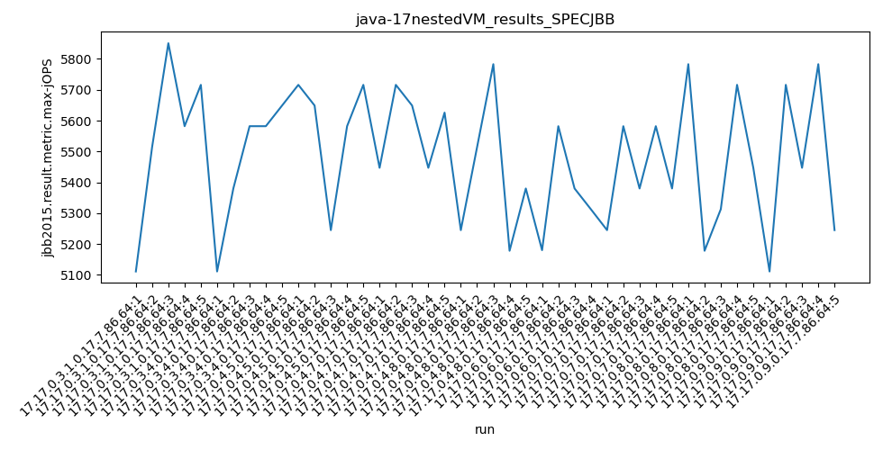
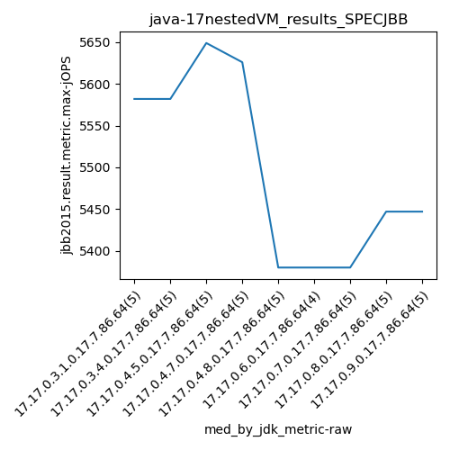
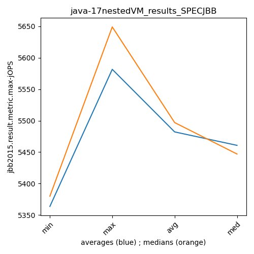
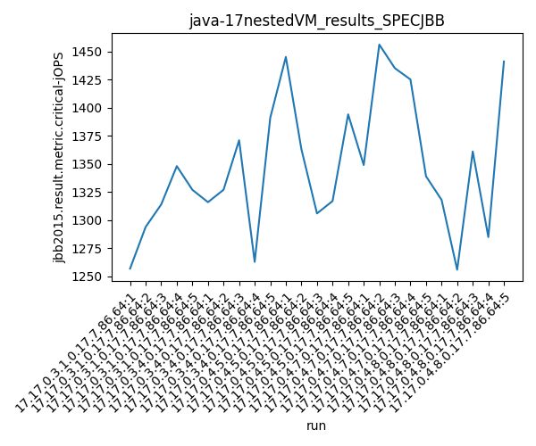
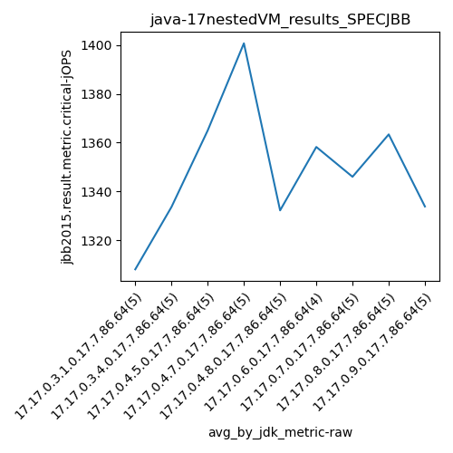
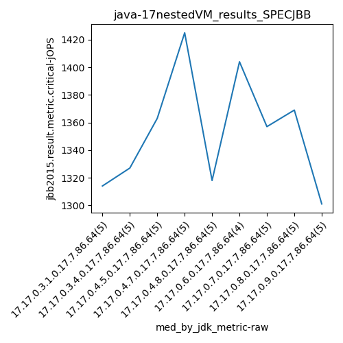

java-17 SPECJBB
Context at bottom
/home/jvanek/git/benchmarks-in-nested-virtualisation-toolchain/final_results/nestedVM_results/nestedVM_results_J2DBENCH
java-17
SPECJBB
/home/jvanek/git/benchmarks-in-nested-virtualisation-toolchain/final_results/nestedVM_results/nestedVM_results_RADARGUNs3
java-17
SPECJBB
/home/jvanek/git/benchmarks-in-nested-virtualisation-toolchain/final_results/nestedVM_results/nestedVM_results_DACAPO
java-17
SPECJBB
/home/jvanek/git/benchmarks-in-nested-virtualisation-toolchain/final_results/nestedVM_results/nestedVM_results_JMH
java-17
SPECJBB
/home/jvanek/git/benchmarks-in-nested-virtualisation-toolchain/final_results/nestedVM_results/nestedVM_results_SPECJBB
java-17
SPECJBB
nestedVM_results_SPECJBB
- nestedVM_results_SPECJBB - max-jops
- nestedVM_results_SPECJBB - critical jops
nestedVM_results_SPECJBB - max-jops
Expected number of java-17 JDKs: 9
1st avgmed_alljdks_metric:
/home/jvanek/git/benchmarks-in-nested-virtualisation-toolchain/final_results/result_processing.py /home/jvanek/git/benchmarks-in-nested-virtualisation-toolchain/final_results/nestedVM_results/nestedVM_results_SPECJBB jbb2015.result.metric.max-jOPS False
values: [5111, 5514, 5851, 5582, 5716, 5111, 5380, 5582, 5582, 5649, 5716, 5649, 5245, 5582, 5716, 5447, 5716, 5649, 5447, 5626, 5245, 5514, 5783, 5178, 5380, 5180, 5582, 5380, 5313, 5245, 5582, 5380, 5582, 5380, 5783, 5178, 5313, 5716, 5447, 5111, 5716, 5447, 5783, 5245]

Expected number of iterations: 5
final number of values: 44 out of 45
Pass rate: 97.8%
values: (5111, 5851, 5484.863636363636, 5514)

** accuracy from all jdks and runs
more is better
MIN: 5111
MAX: 5851
AVG: 5484.863636363636
MED: 5514
Relative differences 1:
MIN-MAX: 13.0 %
MIN-AVG: 7.0 %
MIN-MED: 7.0 %
MAX-MIN: -14.0 %
MAX-AVG: -7.0 %
MAX-MED: -6.0 %
AVG-MED: 1.0 %
stored to java-17.properties. sort | uniq that!
2nd avgmed_by_jdk_metric:
values: [5554.8, 5460.8, 5581.6, 5577.0, 5420.0, 5363.75, 5433.8, 5487.4, 5460.4]

values: [5582, 5582, 5649, 5626, 5380, 5380, 5380, 5447, 5447]

values: (5363.75, 5581.6, 5482.172222222222, 5460.8)
values: (5380, 5649, 5497.0, 5447)

** accuracy from all jdks where runs were avged
more is better
MIN: 5363.75
MAX: 5581.6
AVG: 5482.172222222222
MED: 5460.8
Relative differences 1:
MIN-MAX: 4.0 %
MIN-AVG: 2.0 %
MIN-MED: 2.0 %
MAX-MIN: -4.0 %
MAX-AVG: -2.0 %
MAX-MED: -2.0 %
AVG-MED: -0.0 %
stored to java-17.properties. sort | uniq that!
** accuracy from all jdks where runs were medianed
more is better
MIN: 5380
MAX: 5649
AVG: 5497.0
MED: 5447
Relative differences 1:
MIN-MAX: 5.0 %
MIN-AVG: 2.0 %
MIN-MED: 1.0 %
MAX-MIN: -5.0 %
MAX-AVG: -3.0 %
MAX-MED: -4.0 %
AVG-MED: -1.0 %
stored to java-17.properties. sort | uniq that!
nestedVM_results_SPECJBB - critical jops
Expected number of java-17 JDKs: 9
1st avgmed_alljdks_metric:
/home/jvanek/git/benchmarks-in-nested-virtualisation-toolchain/final_results/result_processing.py /home/jvanek/git/benchmarks-in-nested-virtualisation-toolchain/final_results/nestedVM_results/nestedVM_results_SPECJBB jbb2015.result.metric.critical-jOPS False
values: [1257, 1294, 1314, 1348, 1327, 1316, 1327, 1371, 1263, 1391, 1445, 1363, 1306, 1317, 1394, 1349, 1456, 1435, 1425, 1339, 1318, 1256, 1361, 1285, 1441, 1311, 1275, 1404, 1443, 1318, 1396, 1277, 1382, 1357, 1434, 1298, 1261, 1455, 1369, 1301, 1394, 1291, 1293, 1390]

Expected number of iterations: 5
final number of values: 44 out of 45
Pass rate: 97.8%
values: (1256, 1456, 1348.7954545454545, 1348)

** accuracy from all jdks and runs
more is better
MIN: 1256
MAX: 1456
AVG: 1348.7954545454545
MED: 1348
Relative differences 1:
MIN-MAX: 14.0 %
MIN-AVG: 7.0 %
MIN-MED: 7.0 %
MAX-MIN: -16.0 %
MAX-AVG: -8.0 %
MAX-MED: -8.0 %
AVG-MED: -0.0 %
stored to java-17.properties. sort | uniq that!
2nd avgmed_by_jdk_metric:
values: [1308.0, 1333.6, 1365.0, 1400.8, 1332.2, 1358.25, 1346.0, 1363.4, 1333.8]

values: [1314, 1327, 1363, 1425, 1318, 1404, 1357, 1369, 1301]

values: (1308.0, 1400.8, 1349.0055555555555, 1346.0)
values: (1301, 1425, 1353.111111111111, 1357)

** accuracy from all jdks where runs were avged
more is better
MIN: 1308.0
MAX: 1400.8
AVG: 1349.0055555555555
MED: 1346.0
Relative differences 1:
MIN-MAX: 7.0 %
MIN-AVG: 3.0 %
MIN-MED: 3.0 %
MAX-MIN: -7.0 %
MAX-AVG: -4.0 %
MAX-MED: -4.0 %
AVG-MED: -0.0 %
stored to java-17.properties. sort | uniq that!
** accuracy from all jdks where runs were medianed
more is better
MIN: 1301
MAX: 1425
AVG: 1353.111111111111
MED: 1357
Relative differences 1:
MIN-MAX: 9.0 %
MIN-AVG: 4.0 %
MIN-MED: 4.0 %
MAX-MIN: -10.0 %
MAX-AVG: -5.0 %
MAX-MED: -5.0 %
AVG-MED: 0.0 %
stored to java-17.properties. sort | uniq that!
/home/jvanek/git/benchmarks-in-nested-virtualisation-toolchain/final_results/nestedVM_results/nestedVM_results_RADARGUNs1
java-17
SPECJBB
pass rates:
nestedVM_results_SPECJBB=97.8%
Context:
- nestedVM_results
- SPECJBB